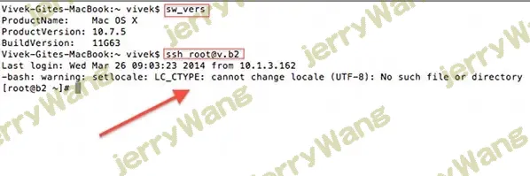
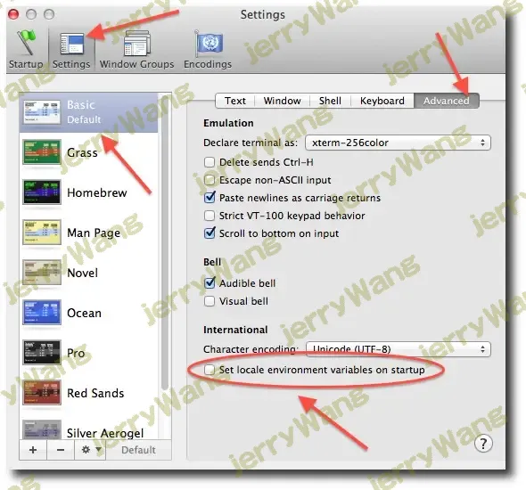
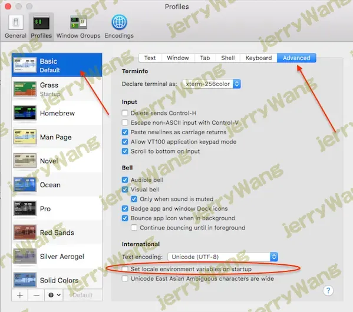

mac通过终端登陆服务器报LC_CTYPE: cannot change locale (UTF-8): No such file or directory
通过OS X ssh Terminal应用程序连接到任何远程Linux / Unix / BSD服务器或计算机时，出现以下错误：
ssh user@server1.cyberciti.biz
上次登录时间：2014年3月26日星期三，1.2.3.4起
-bash：警告：setlocale：LC_CTYPE：无法更改语言环境（UTF-8）：无此类文件或目录
如何解决此错误?
[donotprint] [/ donotprint]此警告或错误是OpenSSH服务器和OS X ssh终端客户端问题的一部分。可以使用多种方法进行修复。
了解LC_ *环境变量
在远程服务器上键入以下命令以显示Glibc支持的所有语言环境：
1 | $ locale -a |
接下来，键入以下命令以在本地系统（基于OSX / Unix / Linux的桌面）上显示设置：
1 | printenv echo “ $ LC_CTYPE ” |
样本输出：
1 | UTF-8 |
上面的命令显示国家和语言名称，以及语言环境使用的字符编码。您的本地ssh客户端正在将您的LC *环境变量发送到远程sshd服务器。换句话说，SSH还将尝试在删除服务器上设置您在本地OSX系统上设置的每个LC *变量。这是此问题的示例：

图01：警告setlocale lc_ctype无法更改语言环境（utf-8）
修复LC_CTYPE：在Linux / OS X上无法更改语言环境（UTF-8）错误
可以如下修复。
方法1：如果您在OS X上使用终端应用程序
如果您使用的是“终端”应用，请点击
1 | 终端 > 首选项 >选择终端类型，例如基本（默认）> 高级选项卡 |
确保未选中“在启动时设置区域设置环境变量”，如下所示：

图02：通过取消选中“在启动时设置区域设置环境变量”复选框来修复OS X终端
这是MacOS X v10.11.6的另一个屏幕截图：

图03：在OS X EI Caption上取消选中“在启动时设置区域设置环境变量”复选框
您必须关闭所有ssh会话并重新启动终端应用程序。
方法2：阻止OpenSSH客户端在OS X / Linux / Unix桌面上发送LC_ *变量
编辑/ etc / ssh / ssh_config或/ etc / ssh_config文件，输入：
1 | $ sudo vi〜/ .ssh / config |
删除或注释掉，如下所示：
1 | #SendEnv LANG LC_ * |
保存并关闭文件。
方法3：在远程服务器上安装所需的语言环境
最后，您可以使用localedef命令安装所需的语言环境，或考虑在语言环境/远程系统中选择其他语言环境，来解决此问题：
1 | ＃localedef -i zh_CN -f UTF-8 zh_CN.UTF-8 |
 微信
微信 支付宝
支付宝